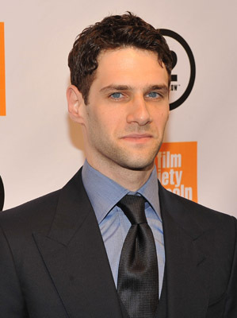
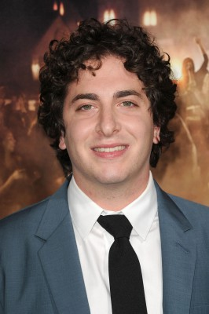
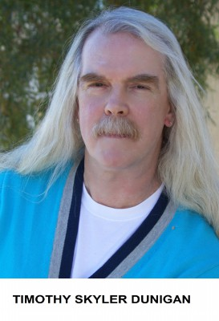

#191 Hangover 3
Alternativ: The Hangover Part III


 IMDB-Wertung: 5.8 / 10
IMDB-Wertung: 5.8 / 10  Metascore: 30
Metascore: 30 
Zwei Jahre nach den Ereignissen in Hangover 2 führen Phil, Stu und Doug wieder ein ruhiges Leben. Die Tattoos wurden entfernt, Ermittlungsakten bereinigt. Für Alan ändert sich jedoch alles, als sein Vater stirbt und er in eine schwere psychische Lebenskrise stürzt. Mit irrsinnigen Ideen versucht er sich von Frust und Trauer loszureißen. Die drei Freunde beschließen, sich dem trauernden Alan anzunehmen und gemeinsam mit ihm erneut eine Reise nach Las Vegas zu unternehmen um ihn auf andere Gedanken zu bringen. Der Aufenthalt läuft allerdings komplett aus dem Ruder. Die Gruppe gerät an einen heimtückischen Gangsterboss, der Doug entführt und für dessen Freilassung 21 Millionen US-Dollar von Mr. Chow fordert.
Jahr: 2013
Dauer: 100 Minuten
FSK: 12
Land: USA Studio: Warner Bros.Tonspuren: DD5.1 - ,
Untertitel: Deutsch,
Auflösung: 1080p (1920x800) Größe: 7413 MB
Genre: Komödie, Krimi
Regisseur: Todd Phillips
Drehbuch: Todd Phillips, Craig Mazin, Jon Lucas, Scott Moore
Soundtrack: Christophe Beck
Darsteller:
 Bradley Cooper als Phil
Bradley Cooper als Phil Ed Helms als Stu
Ed Helms als Stu Zach Galifianakis als Alan
Zach Galifianakis als Alan-  Justin Bartha als Doug
 Ken Jeong als Mr. Chow
Ken Jeong als Mr. Chow John Goodman als Marshall
John Goodman als Marshall Melissa McCarthy als Cassie
Melissa McCarthy als Cassie Jeffrey Tambor als Sid
Jeffrey Tambor als Sid Heather Graham als Jade
Heather Graham als Jade Mike Epps als Black Doug
Mike Epps als Black Doug- Sasha Barrese als Tracy
 Jamie Chung als Lauren
Jamie Chung als Lauren- Sondra Currie als Linda
 Gillian Vigman als Stephanie
Gillian Vigman als Stephanie-  Oliver Cooper als Pharmacy Assistant
- Mike Vallely als Nico
- Grant Holmquist als Tyler
- Oscar Torre als Officer Vasquez
 Jonny Coyne als Hector
Jonny Coyne als Hector- Silvia Curiel als House Keeper
- Betty Murphy als Cassie's Mom
- Jim Lau als Chief Prison Guard
- Lela Loren als Female Officer
- Scott Anthony Leet als Henchman #1
 Tim Sitarz als Henchman #2
Tim Sitarz als Henchman #2- Roger Schueller als Priest at Funeral
- Jenny Ladner als Party Girl
- Emma Wetzel als Freeway Girl
- Ariane Bellamar als Bride , uncredited
 Brian Blu als Business Traveler , uncredited
Brian Blu als Business Traveler , uncredited- Antonio D. Bonilla als Tourist , uncredited
- Charlie Brewer als Freeway Dad , uncredited
- Deuandra T. Brown als Local Shopper , uncredited
- Danielle Burgio als Freeway Mom , uncredited
- Cham als Thai Prisoner , uncredited
- Peter Chao als Himself - Chao's son , uncredited
- Billy Choi als Thai prison guard , uncredited
-  Timothy Skyler Dunigan als Pedestrian / Tourist , uncredited
- Andres Galindo als Casino Guy , uncredited
- Gladis Giada als Pedestrian , uncredited
- Zuhair Haddad als Sheik , uncredited
- Brenda Johnson als Valet Patron , uncredited
- Danny Le Boyer als Henchman #5 , uncredited
 Raul Limon als Casino Patron , uncredited
Raul Limon als Casino Patron , uncredited Rob Mars als Henchman #3 , uncredited
Rob Mars als Henchman #3 , uncredited- Dean Mauro als High Roller , uncredited
- Tarah McDaniel als Hooker , uncredited
- Brian Metran als Thai Prisoner , uncredited
- Sasha Milan als Pimp , uncredited
- Michael Monteiro als High Roller , uncredited
Datei: X:\6-Hexalogie(A-Z)\Hangover\Hangover 3 (2013, FSK12, 1920x800).mkv seit 02.02.2015
Festplatte: HD Collection-3(N-Z)-6(A-Z)
 Es gibt insgesamt 9 Filme in der Gruppe '6-Hexalogie(A-Z)\Hangover'
Es gibt insgesamt 9 Filme in der Gruppe '6-Hexalogie(A-Z)\Hangover'